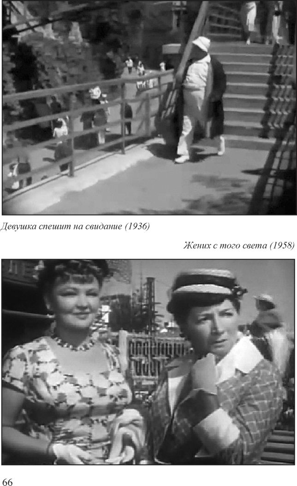
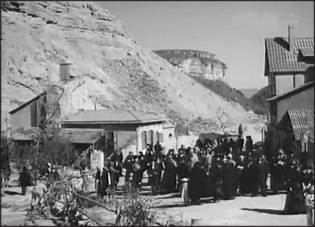
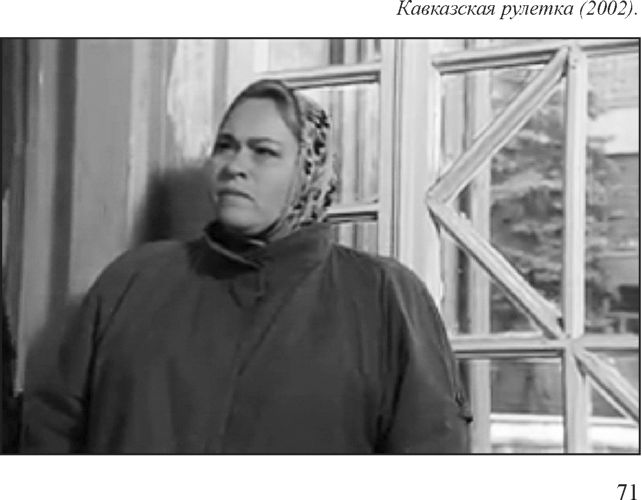

Страницы авторов "Тёмного леса"
Пишите нам! temnyjles@narod.ru
2013 год связан со многими знаменательными юбилейными датами нашего города. В этом году исполняется 210 лет со дня основания Кисловодска. 190 лет отметит Кисловодский курортный парк. 110 лет назад Кисловодск получил городской статус. Этот список юбилеев можно продолжать долго. Но об одном, весьма "круглом" юбилее мало кто знает. 100 лет назад были сняты два коротких и, естественно, немых кинофильма о Кисловодске. С них и началась череда других киносъемок на нашей Кисловодской земле.
К слову сказать, первый кинопоказ на Кисловодском курорте состоялся в далеком 1902 году в здании Курзала Владикавказской железной дороги (ныне Федеральная филармония на КМВ). А уже через 10-12 лет в Кисловодске было несколько "электробиографов" (как тогда называли кинотеатры), принадлежавших частным лицам.
И вот в октябре 1913 года вниманию курортной публики было представлено две игровые ленты: "Осень в Кисловодске" и "Новые птицы - новые песни". К сожалению, трудно сказать, сохранились ли где-то на полках архивов эти уникальные фильмы. Но рядовому зрителю они уже точно не доступны. Однако по программе, представленной в одном из номеров популярного тогда журнала "Кавказские курорты" можно представить себе действие этих кинокартин. "Осень в Кисловодске" - это небольшая зарисовка из жизни прославленного курорта. Окончился летний сезон, и установилась неважная погода. Курортная публика скучает. Купцы и квартирные хозяйки на грани отчаянья: товар не продается, квартиры опустевают. Театр закрывается, и актеры уезжают на гастроли в Грозный. По ночам в городе кромешная тьма. Интересно, что каждый фрагмент фильма иллюстрировался не без остроумия подобранной мелодией песни или городского романса. Когда показывалось как курсовые (т.е. отдыхающие) возвращаются ночью в свои дома и квартиры, то тапер играл мелодию "Правая, левая где сторона?". Фрагмент под названием "Обыватели ищут развлечений" иллюстрировался мелодией "Укажи мне такую обитель, я такого угла не встречал.". Показ фрагмента "Купцы в унынии" сопровождался мелодией "Не осенний мелкий дождичек брызжет сквозь туман - слезы горькие льет молодец на свой бархатный кафтан.", а фрагмент "Квартирные хозяйки" мелодией "Пойду в аптеку, куплю яду, сама себя и отравлю."
Игровая лента в двух частях "Новые птицы - новые песни" в подобном же духе рассказывала о прибытии в Кисловодск на гастроли театральной труппы, и о том, как актеров встречали антрепренерша театра госпожа Вейконе и режиссер Ленский, как проходили сами гастроли.
Всего три года спустя располагавшаяся в кисловодском отеле "Скала" (массивное здание на горе за нынешним музеем "Дача Шаляпина") местная контора петроградской кинематографической фирмы Абрама Хохловкина получила разрешение на съемку кинолент по всем Кавминводам. Но, к сожалению, пока остается неизвестным какие еще фильмы были сняты в Кисловодске до 1917 года.
Кисловодск снова выступил в роли площадки для киносъемок уже в советские годы. В 1936 году вышел художественный фильм режиссера Михаила Вернера "Девушка спешит на свидание". Сюжет советской комедии таков: профессор Федоров (в исполнении популярного тогда актера Бориса Петкера) и служащий Гуров (его играл Михаил Ростовцев) отправляются на курорт и забывают паспорта дома. Жены обоих высылают им документы по почте, но девушка-экспедитор перепутывает конверты, в результате чего Федоров получает паспорт Гурова и наоборот. Дальше действие разворачивается в лучших традициях советской комедии, и ситуация разрешается только тогда, когда на курорт приезжают жены незадачливых героев. Фильм снимался в основном в Ессентуках, но в объектив кинокамеры попали и некоторые места Кисловодского курорта. В частности, лестница около нынешней улицы Карла Маркса, что выше "Пятачка". Сейчас эта замечательная картина, музыку к которой писал Исаак Дунаевский, а тексты песен - Василий Лебедев-Кумач, мало известна даже поклонникам отечественного кинематографа.
Сразу несколько фильмов были сняты в Кисловодске и его окрестностях в первое послевоенное десятилетие. В 1950 году на экраны вышла знаменитая историко-приключенческая драма Константина Юдина "Смелые люди", в которой снялись в главных ролях Сергей Гурзо, Алексей Грибов, Тамара Чернова и Олег Солюс. Фильм повествует о событиях, развернувшихся где-то на передовой в годы Великой Отечественной войны. Съемки проходили в регионе КМВ и в горах Баксанского ущелья. В Кисловодске снимались эпизоды, связанные с тем как отважная девушка Надя Воронова (Тамара Чернова) получает от доверенных лиц информацию о планах гитлеровских оккупантов, чтобы передать ее партизанскому отряду, в котором она сама состоит. Среди кисловодских мест, "засветившихся" в кинофильме - площадка перед городской АТС-3 у нынешнего Гастронома, а также улица Шаумяна около поворота на переулок Яновского.
Интересны и "кисловодские эпизоды" очень красивого и высокобюджетного советско-албанского исторического кинофильма "Великий воин Албании Скандербег" режиссера Сергея Юткевича, где сыграли такие актеры как Акакий Хорава, Николай Тимофеев, Владимир Соловьев, а в роли венецианского дожа снимался сам Александр Вертинский. Съемки проходили как раз в годы недолгой, но казавшейся вечной, дружбы СССР и Албании. Эффектная батальная сцена сражения объединенной албанской армии с турецким войском в долине Валикарды снималась в районе Кольцо-Горы и на месте нынешнего поселка Мирный (его тогда не существовало). Сейчас трудно поверить, но в 1952 году, когда шли съемки - привычного для нас леса на склонах Боргустанского хребта не было. И только луговые травы покрывали скалистые склоны гор. На экраны фильм вышел в 1953 году.
1955 год ознаменовался выходом сразу двух картин, съемки которых проходили в том числе и в районе Кисловодска. В полуторачасовой комедии Андрея Фролова "Доброе утро" есть эпизод, когда девушка-водитель Катя (ее роль сыграла Татьяна Конюхова), не выдержав несносного характера начальника строительного участка Ушатова (Афанасий Белов) завезла его и его помощника Боброва (Николай Сморчков) в автомобиле в реку и там оставила. Эта сцена снималась рядом с нынешним поселком Нежинским на реке Подкумок.
Второй картиной, вышедшей в том же году была экранизация повести Лермонтова "Княжна Мери" режиссера Исидора Анненского. В картине можно увидеть и пятигорские и кисловодские достопримечательности, связанные с жизнью и творчеством Михаила Юрьевича Лермонтова. Шли съемки и в одном из горных ущелий близ Кисловодска - по всей видимости Березовском (сцена дуэли). Фильм Анненского замечателен тем, что с высокой точностью передает содержание лермонтовского произведения, не допуская каких-либо вольных трактовок, которыми отличается более поздний кинематограф. Роли исполнили хорошие, но уже практически забытые актеры: Анатолий Вербицкий, Карина Санова, Леонид Губанов, Михаил Астангов, Клавдия Еланская и другие.
Практически целиком в Кисловодске снимался остроумный кинофельетон Леонида Гайдая "Жених с того света", который вышел на экраны в урезанном виде в 1958 году. Сюжет этого замечательного, но укороченного цензурой фильма, заключается в том, что начальника курортного учреждения под названием "КУКУ" товарища Петухова, обокрал карманник, которого затем сбила машина. А поскольку при погибшем оказались документы Петухова, то последнего и сочли погибшим. И весь оставшийся фильм бюрократ и буквоед Петухов пытается собрать документы, доказывающие, что он на самом деле живой. В картине Гайдая узнаваемы многие места Кисловодска. Само "КУКУ" (Кустовое управление курортных учреждений) располагалось согласно фильму в нынешнем здании Центральной городской библиотеки на улице Красноармейской, где соседствовало с рядом других весьма оригинальных контор: "Нежилотдел", "НИИГУГУ", "Гипроквас", "Гипропиво", "Заготлыко", "Райпиявка при Горпиявке", "Бюро пропусков банно-прачечного треста" и другими. В объективе камеры появлялись также железнодорожный вокзал и привокзальная площадь, Колоннада, проспект Дзержинского ниже Каскадной лестницы и другие места. Замечателен актерский состав. Главную роль сыграл Ростислав Плятт, который, между прочим, прожил все свое раннее детство с 1908 по 1916 год в Кисловодске. Фикусова (заместителя Петухова) сыграл блистательный Георгий Вицин. Особые нотки тонкого юмора привнесла в фильм своим появлением в эпизодах великая актриса Рина Зеленая, которая сыграла маму невесты Петухова Нины Павловны. Ее фразы, такие как: "Жених начинает петлять." стали едва ли не самыми запоминающимися в фильме.
В 1979 году на советские экраны вышел замечательный фильм Карена Шахназарова "Добряки" по одноименной пьесе Леонида Зорина. Этот, вроде бы комедийный фильм, рассказывает о том, как личностные отношения способны подменить собой здравый смысл и привести к не очень приятным и далеко не положительным последствиям. Не блещущий талантами соискатель института Античной культуры Гордей Кабачков (Георгий Бурков) благодаря удачному для него стечению обстоятельств успешно защищает кандидатскую диссертацию, а женитьба на недалекой и инфантильной, но до безумия влюбленной в него дочери директора института Ираиде (ее сыграла Татьяна Васильева), возводит его на директорскую должность. Заканчивается фильм закономерно - Кабачкова разоблачает один его давний приятель. Выясняется, что у него - кандидата наук и одновременно директора института Античной культуры нет даже законченного школьного образования и вообще весьма сомнительное прошлое. Фигурировавший в кинокартине институт располагался в снесенном лет 5 назад здании старой городской больницы на углу улиц Горького и Чкалова. Сцены романтических свиданий Кабачкова и Ираиды снимались в курортном парке. Один из эпизодов снимался на лестнице с гротом ниже бывшего здания грязелечебницы (у санатория "Крепость").
Три весьма интересные кинокартины были сняты в Кисловодске в 1980-х годах. В 1984 году зрители увидели фильм Сергея Вронского "Песочные часы", практически забытый в наше время. Сюжет фильма таков. В курортном городе через 20 лет после войны встречаются два друга-однополчанина. И один из них под влиянием друга многое переосмысливает в своей жизни и пытается вернуть жену, родившую ему сына, которую он некогда бросил. В фильме сыграли такие актеры как Анатолий Кузнецов, Николай Скоробогатов, Галина Польских и другие.
Извечному вопросу взаимоотношений мужчины и женщины посвящена картина прославленного режиссера Александра Сокурова "Спаси и сохрани" (1989 г.) - авторская интерпретация романа Гюстава Флобера "Мадам Бовари". Фильм снимался в специально выстроенном для этого "городке" в Аликоновском ущелье, а также в курортном парке Кисловодска. В эпизодах узнаваемы здания у площади "Пятачок" и бывший дом нефтепромышленника Дружинина ("дом с кариатидами" на переулке Парковый Пешеход). Интересно, что главную роль жены врача по имени Эмма сыграла не профессиональная актриса, а преподаватель Сорбонны, этнолингвист Сесиль Зервудаки - француженка греческо-итальянского происхождения. Сокуров познакомился со своей будущей "Эммой" на кинофестивале в Локарно. Любовь, смерть, смысл бытия приобретают в фильме особый драматизм, преломляясь через призму женской судьбы. Героиня в итоге своих исканий и переживаний решает отравиться. Трагической кульминацией фильма является сцена грандиозных и многолюдных похорон Эммы, когда любящий муж решает предать ее земле в трех гробах, вложенных один в другой. Фильм получил главный приз международного фестиваля в канадском Монреале (1989 г.) и гран-при международного фестиваля в Дюнкерке во Франции. Отечественному зрителю картина опять-таки малоизвестна, что связано с ее быстрым уходом в западноевропейский прокат. Завоевать большую популярность у россиян картина, скорее всего, не смогла бы по той причине, что при своей почти трехчасовой продолжительности, она весьма непроста для восприятия. Еще одной характерной особенностью фильма является большое число довольно откровенных эротических сцен.
В 1990 году состоялась премьера фильма с "кисловодским" названием "Храм Воздуха", который был снят азербайджанским кинорежиссером Расимом Оджаговым. Сюжет фильма, как и предыдущего, - весьма трагичен. Действие происходит в сталинские послевоенные годы. Главный герой по имени Юсиф (которого сыграл Фахраддин Манафов), переживает заключение, трагическую смерть отца в лагере, потерю любимой девушки, вышедшей замуж, не дождавшись его. И все-таки любимая возвращается к Юсифу. Он отправляется с ней отдыхать в Кисловодск, где какое-то совсем недолгое время они живут счастливо. Но счастье любящей пары скоротечно. В ресторане (съемки проходили, вероятно, в "Родопи") Юсиф вступает в конфликт с уголовниками-завсегдатаями ресторана, которые уже в следующий вечер убивают мужчину прямо у дома, где он живет. В драматизме сюжета фильма хорошо выразились трагизм и тревожность общественной ситуации в годы развала "советской империи", который сопровождался таким же ростом преступности, как и в послевоенные годы.
После распада СССР Кисловодск также становился несколько раз площадкой для киносъемок. Здесь следует назвать психологическую драму Федора Попова "Кавказская рулетка" (2002 г.), в которой снялись Татьяна Мещеркина, Анатолий Горячев и замечательная актриса Нина Усатова. Действие картины связано с военными событиями в Чечне. Начальные эпизоды этого фильма с трагическим финалом снимались у Лермонтовской скалы и на станции "Минутка".
Пожалуй, наиболее масштабным из кинематографических проектов, осуществленных на Кавминводах за последние два десятилетия, стал сериал "Герой нашего времени" режиссера Александра Котта (2006 г.) с Игорем Петренко в роли Печорина. При том, что зрители и критика встретили 8-серийную экранизацию романа М.Ю. Лермонтова довольно прохладно, отмечалось, что преимуществом картины являются натуральные кавказские виды, выступившие естественными декорациями при съемках.
Думается, что этот экскурс в "кинематографическую" историю Кисловодска не является исчерпывающим. Потому, уважаемые читатели, если вы располагаете какой-либо информацией о фильмах, которые снимались у нас, но не упомянуты в моем материале - пишите в редакцию "КГ". Здесь еще может быть место настоящим и весьма интересным открытиям.
  
Спаси и сохрани (1988)
Вячеслав Яновский. Неакадемические сочинения